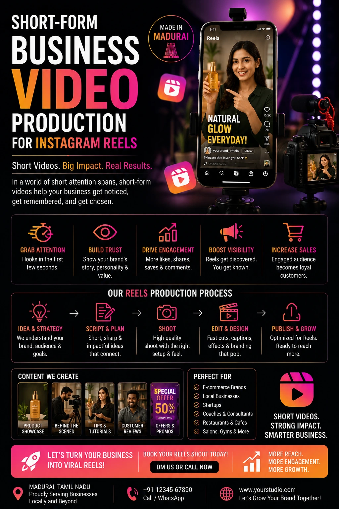
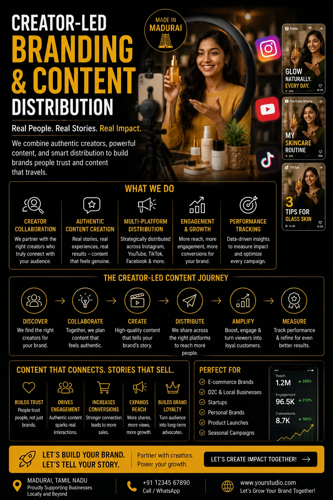

From Scrollers to Buyers: Optimizing Social Media Content Creation for Fast-Paced Consumer Feeds
The Scroll Economy and What It Demands
The average Indian social media user spends approximately two hours per day across Instagram, YouTube, and WhatsApp — and during that time, they scroll past thousands of pieces of content. The vast majority of that content generates a passive visual impression at best. A tiny fraction of it stops the scroll. And an even smaller fraction of that fraction actually changes behaviour — drives a visit, generates an enquiry, produces a purchase.
Social media content creation that is built to convert — to move a viewer from passive consumption to active commercial intent — is a fundamentally different discipline from social media content creation that is built to generate reach or impressions. The brands that understand this distinction are building content systems that deliver commercial outcomes. The ones that do not are building content archives that generate likes and generate nothing else.
This guide covers the specific techniques, formats, and production approaches that convert scrollers into buyers — from high-engagement Instagram Reels strategy and viral social media video production to micro-content promotional films and creative agency content distribution frameworks built for Indian consumer feeds.
The Three-Second Rule: Why the Hook Is Everything
Every platform where social media content creation matters — Instagram, YouTube, LinkedIn, Facebook — distributes content based on engagement signals generated in the first few seconds after a viewer encounters the content. On Instagram Reels and YouTube Shorts, the algorithm reads completion rate: what percentage of viewers who see the first frame watch to the last. On LinkedIn, it reads the dwell time after the preview expands. On Facebook feed, it reads the three-second video view rate.
In every case, the first three seconds are decisive. A viewer who is not stopped in the first three seconds is gone — and a video with a high drop-off rate in the first three seconds is algorithmically suppressed, reducing distribution to subsequent viewers. The most technically perfect video in the world, with the most compelling message, fails commercially if the first three seconds do not stop the scroll.
The anatomy of a scroll-stopping first three seconds for short-form business video production:
- A visual that is unexpected, specific, or immediately relevant. Generic opening frames — a logo on a background, a slow pan across a product, a person walking toward camera — do not stop the scroll. An unexpected visual juxtaposition, a specific and recognisable detail, or a frame that immediately communicates the viewer's problem or desire does.
- Audio that demands attention in the first second. On platforms where videos autoplay with sound, the first sound the viewer hears is as important as the first visual. A voice that opens with a question — "Are you still photographing your products on your phone?" — stops the scroll more effectively than music fading in under a logo reveal.
- On-screen text that communicates the video's value proposition immediately. Most Indian social media users watch Reels and Shorts in environments where audio is not always audible — the commute, a shared space, a quiet office. On-screen text in the first frame that communicates the video's specific value — "Why your product photos are losing you sales" — ensures the hook works even on mute.
- No branded introduction before the hook. Logo animations, brand name reveals, and "Hi, I'm [brand]" openings consume the three seconds that should be spent stopping the scroll. Brand identity is communicated through visual consistency across the content library — not through a five-second branded intro on every individual piece.

High-Engagement Instagram Reels Strategy: Beyond Views and Reach
A high-engagement Instagram Reels strategy is not optimised for views — it is optimised for the engagement signals that Instagram's algorithm reads as quality indicators and that correlate most strongly with commercial conversion: saves, shares, and profile visits.
Understanding why these three signals matter more than views for business growth:
- Saves indicate that a viewer found the content genuinely useful or reference-worthy — they want to return to it. For business content, saves are the highest quality engagement signal because they indicate that the viewer perceived value in what was shared. A Reel teaching something specific about your product category, or demonstrating something genuinely useful about your service area, will earn saves. A Reel showing a pretty product against a nice background will not.
- Shares extend the brand's reach to the audiences of existing followers — a form of organic word-of-mouth that costs nothing and reaches highly relevant new audiences. Content that earns shares is content that makes the sharer look good, feel something they want others to feel, or identifies something so specifically true about their experience that they cannot help but tag someone who needs to see it.
- Profile visits from Reels indicate that a viewer was interested enough in the brand behind the content to investigate further — which is the conversion moment where a viewer becomes a potential customer. A high-engagement Instagram Reels strategy is measured by how many profile visits the Reel generates relative to its reach, not by how many total views it accumulates.
The content formats that consistently generate saves, shares, and profile visits for Indian business brands on Instagram Reels:
- Before-and-after transformations — showing the gap between the problem and the solution the brand provides
- Process revelations — showing how the product is made or the service is delivered in a way that builds trust in the craft
- Specific, counterintuitive insights — sharing one genuinely useful piece of knowledge about the brand's category that the viewer did not already know
- Problem-identification content — describing a specific pain point so accurately that the viewer feels immediately seen and tags someone with the same problem
- Social proof in motion — customer reactions, testimonial moments, or UGC-style content that shows real people experiencing the brand's value
Viral Social Media Video Production: What Is Actually Replicable
Viral social media video production is frequently misunderstood as something that happens randomly — lightning in a bottle that cannot be planned for or produced intentionally. The reality is more nuanced: while virality cannot be guaranteed, the conditions that make content shareable at scale can be created deliberately. And for Indian brands producing social media assets for business growth, understanding these conditions is the difference between content that earns occasional organic reach and content that regularly earns disproportionate reach relative to its production cost.
The replicable conditions that consistently produce high-sharing video content for Indian brands:
Emotional Clarity
Content that makes a viewer feel one emotion clearly and immediately — humour, surprise, pride, recognition, aspiration — earns shares. Content that mixes emotional signals or delivers a diluted emotional experience earns passive views and nothing more.
Cultural Specificity
For Indian audiences, content that references specific cultural contexts — Tamil festivals, local food culture, regional business life — earns stronger sharing behaviour than generic content, because it gives the viewer an identity signal to share alongside the content itself.
Radical Specificity
Content that is specific enough to feel personally relevant to a narrow audience earns sharing behaviour within that audience at a rate that broad-appeal content targeting everyone does not. "For every Madurai business owner who has tried to photograph their product on their phone" reaches a specific person who shares it with three people exactly like them.
Timing and Trend Alignment
Content published during the peak of a relevant trend, using currently popular audio, or responding to a live cultural moment earns algorithmic amplification that adds distribution scale to content that was already performing well on its own merit.
Micro-Content Promotional Films: The Volume Production Strategy
Micro-content promotional films — 15 to 30 second short-form video assets produced in batches for high-frequency distribution — are the production format that gives Indian brands the content volume needed to test, learn, and optimise their social media content creation approach without the cost of producing individual ad films for each creative variation.
The strategic logic of batch micro-content production:
- A single shoot day produces 8 to 15 individual micro-content films — each with a slightly different hook, message, or call to action — that can be distributed across 30 to 45 days of content calendar, tested as organic posts before being promoted as paid ads, and refined based on the engagement data each piece generates.
- Testing at low cost before committing paid media budget. A micro-content film that earns strong organic engagement is a film that is already resonating with the target audience — which makes it the ideal candidate for paid promotion. A micro-content film that earns weak organic engagement signals a creative approach that needs adjustment before paid distribution amplifies its underperformance.
- Multi-platform distribution from a single production. A 30-second micro-content film produced in vertical 9:16 for Instagram Reels is reformatted to square 1:1 for Facebook feed, to horizontal 16:9 for YouTube, and to a slightly longer cut with additional context for LinkedIn — four platform-specific assets from a single source production.
- Funnel-stage specific messaging across the batch. Different micro-content films within the same batch target different stages of the purchase funnel: awareness-stage films introducing the brand to new audiences, consideration-stage films demonstrating product quality and brand credibility, and conversion-stage films with a direct call to action targeting viewers who have already engaged with earlier content.

Creator-Led Digital Branding: The Human Element That Converts
Creator-led digital branding is the approach to social media content creation that consistently produces the highest conversion rates for Indian business brands — because it centres a recognisable human presence in the brand's content rather than relying exclusively on product imagery and anonymous brand voice.
The commercial mechanism of creator-led digital branding:
- Parasocial trust accelerates the purchase decision. A viewer who has watched ten videos featuring a brand's founder or representative feels they know that person — and by extension, the brand — before any commercial transaction has occurred. This parasocial familiarity produces the trust that normally requires multiple touch-points to build, in a fraction of the time and at a fraction of the cost of traditional advertising.
- The human face creates algorithm advantage. Instagram, LinkedIn, and YouTube all currently distribute content featuring human faces more aggressively than content without them — particularly in the first frame. Content that opens with a face consistently outperforms equivalent content that opens with a product or graphic.
- Authenticity signals reduce purchase hesitation. A business where a real person is visibly accountable — where the viewer can see who makes the product, who stands behind the service, who answers for the quality — is a business that reduces the risk perception that holds buyers back from purchase. This is particularly powerful for Indian consumers buying from a brand for the first time.
Creative Agency Content Distribution: Making Production Investment Work Harder
Creative agency content distribution is the strategic layer that ensures the investment in professional social media content creation reaches the right audiences at the right frequency to produce commercial outcomes. Production quality without distribution strategy produces beautiful content that nobody sees. Distribution strategy without production quality produces frequent content that nobody remembers. The combination — professional production delivered through a systematic distribution framework — is what produces the compounding audience growth and conversion improvement that makes social media assets for business growth a genuine commercial investment rather than a marketing cost.
The components of an effective creative agency content distribution framework for Indian brands:
Organic Distribution
- Platform-specific posting schedule aligned with audience activity peaks
- Caption and hashtag strategy optimised for search and discovery
- Cross-platform repurposing of every piece of content across Instagram, YouTube, LinkedIn, and WhatsApp
- Community engagement strategy — comments, replies, collaborations — that extends reach to adjacent audiences
Paid Amplification
- Boosting organically proven content — pieces that have already demonstrated audience resonance — with targeted paid distribution
- Retargeting campaigns serving conversion-stage content to viewers who engaged with awareness content
- Lookalike audience campaigns using existing customer data to reach new audiences with similar purchase intent
- A/B testing of micro-content variants with small paid budgets before scaling the winning creative
Performance Analysis
- Weekly review of saves, shares, and profile visit rates by content type and format
- Monthly analysis of which content formats are driving the highest commercial outcomes — website visits, WhatsApp enquiries, direct sales
- Quarterly creative refresh based on performance data — retiring underperforming content types, scaling proven formats
- Attribution tracking connecting specific content pieces to specific commercial outcomes wherever platform data allows
Social Media Assets for Business Growth: Building the Content Compound
The most powerful aspect of systematic social media content creation is the compound effect it produces over time. A brand that publishes three pieces of high-quality, strategically optimised content per week accumulates a searchable, discoverable content library of 150 pieces per year. Each piece continues to earn views, saves, and profile visits long after its publication date. Each piece that performs well algorithmically brings new followers into the brand's audience who then see every subsequent piece of content.
The brands building genuine business growth through social media assets for business growth in 2026 are not looking at their content calendar as a weekly obligation — they are building a content compound that grows in reach and commercial value with every piece added to it. The audience built through consistent, high-quality social media content creation is an asset that does not depreciate — unlike paid advertising, which stops the moment the budget stops.
Conclusion
Converting scrollers into buyers through social media content creation requires the intersection of three things that most brands have separately but rarely have together: production quality that stops the scroll, creative strategy that generates the engagement signals algorithms reward, and distribution systems that ensure the content reaches the audiences most likely to convert.
Short-form business video production, a disciplined high-engagement Instagram Reels strategy, batched micro-content promotional films, creator-led digital branding, and systematic creative agency content distribution — together, these are the components of a social media assets for business growth system that produces compounding commercial returns rather than a content archive that generates impressions and nothing more.
At The PhD Ads, we build social media content creation systems for Indian brands — from viral social media video production and high-engagement Instagram Reels strategy to micro-content promotional films and creative agency content distribution frameworks that convert scrollers into buyers, consistently and at scale.
Key Topics
Ready to Convert Your Social Media Audience into Buyers?
At The PhD Ads, we specialise in social media content creation built for commercial conversion — short-form business video production, high-engagement Instagram Reels strategy, micro-content promotional films, and creative agency content distribution for Indian brands ready to turn their social presence into a genuine sales channel.
Email: team@e2o.in